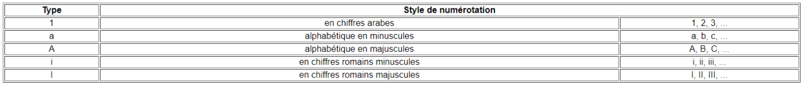

Ces listes sont déclarées par la balise Unordered List <ul>
Cette balise permet de définir une liste dans laquelle chaque élément est précédé d'une puce.
La forme des puces se gére en CSS.
Chaque élément de la liste est repéré dans le code par la balise <li>
Ces listes sont déclarées par la balise Ordered List <ol>
Cette balise permet de définir une liste dans laquelle chaque élément est précédé d'une numération.
L'incrémentation se fait automatiquement.
Chaque élément de la liste est repéré dans le code par la balise <li>
